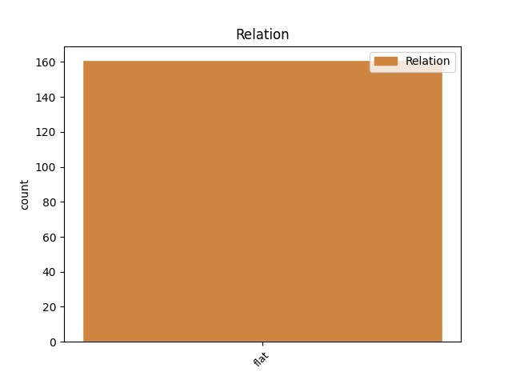
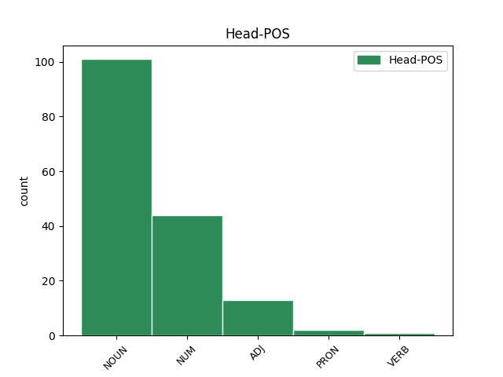
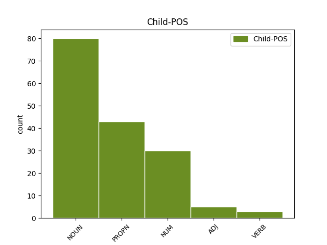

Distribution of features within this leaf



Agreement Rules sorted by frequency.
- When the dependent token is the flat multiword expression(flat) of the head token, and the head token is NOUN
1 Ancak _ _ _ _ 0 _ _ _
2 , _ _ _ _ 0 _ _ _
3 dün _ _ _ _ 0 _ _ _
4 bu _ _ _ _ 0 _ _ _
5 programı _ _ _ _ 0 _ _ _
6 Gül'ün _ _ _ _ 0 _ _ _
7 eşi _ _ _ _ 0 _ _ _
8 Hayrünnisa _ _ _ _ 0 _ _ _
9 Gül'ün _ _ _ _ 0 _ _ _
10 türbanı _ _ _ _ 0 _ _ _
11 olması _ _ _ _ 0 _ _ _
12 nedeniyle _ _ _ _ 0 _ _ _
13 gerçekleştirmeyen _ _ _ _ 0 _ _ _
14 ve _ _ _ _ 0 _ _ _
15 geleneği _ _ _ _ 0 _ _ _
16 bozan _ _ _ _ 0 _ _ _
17 Genelkurmay genelkurmay NOUN Noun Case=Nom|Number=Sing|Person=3 0 _ _ _
18 Başkanı _ _ _ _ 0 _ _ _
19 Org _ _ _ _ 0 _ _ _
20 . _ _ _ _ 0 _ _ _
21 Hilmi Hilmi PROPN Prop Case=Nom|Number=Sing|Person=3 17 flat _ _
22 Özkök'ün _ _ _ _ 0 _ _ _
23 eşi _ _ _ _ 0 _ _ _
24 Özenç _ _ _ _ 0 _ _ _
25 Özkök _ _ _ _ 0 _ _ _
26 , _ _ _ _ 0 _ _ _
27 YAŞ _ _ _ _ 0 _ _ _
28 üyelerinin _ _ _ _ 0 _ _ _
29 eşlerine _ _ _ _ 0 _ _ _
30 öğle _ _ _ _ 0 _ _ _
31 yemeği _ _ _ _ 0 _ _ _
32 vermedi _ _ _ _ 0 _ _ _
33 . _ _ _ _ 0 _ _ _
1 Bize _ _ _ _ 0 _ _ _
2 on on NUM NNum Case=Nom|Number=Sing|NumType=Card|Person=3 0 _ _ _
3 bin _ _ _ _ 0 _ _ _
4 lira lira NOUN Noun Case=Nom|Number=Sing|Person=3 2 flat _ _
5 bile _ _ _ _ 0 _ _ _
6 vermiyorlar _ _ _ _ 0 _ _ _
7 . _ _ _ _ 0 _ _ _
1 İkincisi _ _ _ _ 0 _ _ _
2 de _ _ _ _ 0 _ _ _
3 teknik _ _ _ _ 0 _ _ _
4 raporun _ _ _ _ 0 _ _ _
5 , _ _ _ _ 0 _ _ _
6 Kara kara ADJ NAdj Case=Nom|Number=Sing|Person=3 0 _ _ _
7 Havacılık havacılık NOUN Noun Case=Nom|Number=Sing|Person=3 6 flat _ _
8 Okulu'ndan _ _ _ _ 0 _ _ _
9 bir _ _ _ _ 0 _ _ _
10 albayın _ _ _ _ 0 _ _ _
11 ve _ _ _ _ 0 _ _ _
12 uçak _ _ _ _ 0 _ _ _
13 şirketinden _ _ _ _ 0 _ _ _
14 iki _ _ _ _ 0 _ _ _
15 yetkilinin _ _ _ _ 0 _ _ _
16 düzenlediği _ _ _ _ 0 _ _ _
17 raporda _ _ _ _ 0 _ _ _
18 ki _ _ _ _ 0 _ _ _
19 bilgilerin _ _ _ _ 0 _ _ _
20 aslında _ _ _ _ 0 _ _ _
21 sadece _ _ _ _ 0 _ _ _
22 enkazla _ _ _ _ 0 _ _ _
23 ilgili _ _ _ _ 0 _ _ _
24 olduğunu _ _ _ _ 0 _ _ _
25 , _ _ _ _ 0 _ _ _
26 uçağın _ _ _ _ 0 _ _ _
27 düşüş _ _ _ _ 0 _ _ _
28 nedeniyle _ _ _ _ 0 _ _ _
29 ilgili _ _ _ _ 0 _ _ _
30 olmadığını _ _ _ _ 0 _ _ _
31 söylüyor _ _ _ _ 0 _ _ _
32 . _ _ _ _ 0 _ _ _
1 Ulaştırma ulaş VERB Verb Aspect=Perf|Case=Nom|Mood=Ind|Polarity=Pos|Tense=Pres|VerbForm=Vnoun|Voice=Cau 0 _ _ _
2 Bakanı _ _ _ _ 0 _ _ _
3 Binali Binali PROPN Prop Case=Nom|Number=Sing|Person=3 1 flat _ _
4 Yıldırım _ _ _ _ 0 _ _ _
5 da _ _ _ _ 0 _ _ _
6 , _ _ _ _ 0 _ _ _
7 kazayla _ _ _ _ 0 _ _ _
8 ilgili _ _ _ _ 0 _ _ _
9 beşi _ _ _ _ 0 _ _ _
10 bakanlık _ _ _ _ 0 _ _ _
11 , _ _ _ _ 0 _ _ _
12 biri _ _ _ _ 0 _ _ _
13 THY _ _ _ _ 0 _ _ _
14 görevlisi _ _ _ _ 0 _ _ _
15 altı _ _ _ _ 0 _ _ _
16 kişiden _ _ _ _ 0 _ _ _
17 oluşan _ _ _ _ 0 _ _ _
18 kaza _ _ _ _ 0 _ _ _
19 - _ _ _ _ 0 _ _ _
20 kırım _ _ _ _ 0 _ _ _
21 ekibi _ _ _ _ 0 _ _ _
22 oluşturduklarını _ _ _ _ 0 _ _ _
23 ve _ _ _ _ 0 _ _ _
24 kaza _ _ _ _ 0 _ _ _
25 yerinde _ _ _ _ 0 _ _ _
26 incelemelerini _ _ _ _ 0 _ _ _
27 sürdüreceklerini _ _ _ _ 0 _ _ _
28 kaydetti _ _ _ _ 0 _ _ _
29 . _ _ _ _ 0 _ _ _
Disagree Examples:
1 Ömür ömür NOUN Noun Case=Nom|Number=Sing|Person=3 0 _ _ _
2 Uzatma _ _ _ _ 0 _ _ _
3 Kıraathanesi'nin kıraathane NOUN Noun Case=Gen|Number=Sing|Number[psor]=Sing|Person=3|Person[psor]=3 1 flat _ _
4 kapısı _ _ _ _ 0 _ _ _
5 güm _ _ _ _ 0 _ _ _
6 güm _ _ _ _ 0 _ _ _
7 vuruldu _ _ _ _ 0 _ _ _
8 . _ _ _ _ 0 _ _ _
1 ' _ _ _ _ 0 _ _ _
2 Grup _ _ _ _ 0 _ _ _
3 Başkanvekilleri _ _ _ _ 0 _ _ _
4 Salih _ _ _ _ 0 _ _ _
5 Kapusuz _ _ _ _ 0 _ _ _
6 , _ _ _ _ 0 _ _ _
7 Eyüp _ _ _ _ 0 _ _ _
8 Fatsa _ _ _ _ 0 _ _ _
9 ve _ _ _ _ 0 _ _ _
10 CHP _ _ _ _ 0 _ _ _
11 Grup _ _ _ _ 0 _ _ _
12 Başkanvekili _ _ _ _ 0 _ _ _
13 Haluk _ _ _ _ 0 _ _ _
14 Koç _ _ _ _ 0 _ _ _
15 ile _ _ _ _ 0 _ _ _
16 Büyükelçilik büyükelçilik NOUN Noun Case=Nom|Number=Sing|Person=3 0 _ _ _
17 Konutu'nda konut NOUN Noun Case=Loc|Number=Sing|Number[psor]=Sing|Person=3|Person[psor]=3 16 flat _ _
18 dün _ _ _ _ 0 _ _ _
19 sabah _ _ _ _ 0 _ _ _
20 kahvaltıda _ _ _ _ 0 _ _ _
21 bir _ _ _ _ 0 _ _ _
22 araya _ _ _ _ 0 _ _ _
23 gelen _ _ _ _ 0 _ _ _
24 ' _ _ _ _ 0 _ _ _
25 , _ _ _ _ 0 _ _ _
26 milletvekilleri _ _ _ _ 0 _ _ _
27 ile _ _ _ _ 0 _ _ _
28 Irak'ı _ _ _ _ 0 _ _ _
29 görüştü _ _ _ _ 0 _ _ _
30 . _ _ _ _ 0 _ _ _
1 Türban _ _ _ _ 0 _ _ _
2 konusunu _ _ _ _ 0 _ _ _
3 da _ _ _ _ 0 _ _ _
4 açan _ _ _ _ 0 _ _ _
5 komutanlar _ _ _ _ 0 _ _ _
6 , _ _ _ _ 0 _ _ _
7 bu _ _ _ _ 0 _ _ _
8 konuda _ _ _ _ 0 _ _ _
9 Anayasa anayasa NOUN Noun Case=Nom|Number=Sing|Person=3 0 _ _ _
10 Mahkemesi'nin mahkeme NOUN Noun Case=Gen|Number=Sing|Number[psor]=Sing|Person=3|Person[psor]=3 9 flat _ _
11 kararı _ _ _ _ 0 _ _ _
12 ile _ _ _ _ 0 _ _ _
13 Cumhurbaşkanı'nın _ _ _ _ 0 _ _ _
14 yaptığı _ _ _ _ 0 _ _ _
15 uyarıyı _ _ _ _ 0 _ _ _
16 anımsatarak _ _ _ _ 0 _ _ _
17 toplumu _ _ _ _ 0 _ _ _
18 gerecek _ _ _ _ 0 _ _ _
19 davranışlardan _ _ _ _ 0 _ _ _
20 kaçınılması _ _ _ _ 0 _ _ _
21 gerektiğini _ _ _ _ 0 _ _ _
22 anlattılar _ _ _ _ 0 _ _ _
23 . _ _ _ _ 0 _ _ _
1 O _ _ _ _ 0 _ _ _
2 tekke _ _ _ _ 0 _ _ _
3 , _ _ _ _ 0 _ _ _
4 binikiyüz binikiyüz NUM NNum Case=Nom|Number=Sing|NumType=Card|Person=3 0 _ _ _
5 'lü _ _ _ _ 0 _ _ _
6 yıllardan yıl NOUN Noun Case=Abl|Number=Plur|Person=3 4 flat _ _
7 kalma _ _ _ _ 0 _ _ _
8 dır _ _ _ _ 0 _ _ _
9 . _ _ _ _ 0 _ _ _
1 Onu _ _ _ _ 0 _ _ _
2 görmek _ _ _ _ 0 _ _ _
3 , _ _ _ _ 0 _ _ _
4 karşısına _ _ _ _ 0 _ _ _
5 oturmak _ _ _ _ 0 _ _ _
6 için _ _ _ _ 0 _ _ _
7 Casino casino NOUN Noun Case=Nom|Number=Sing|Person=3 0 _ _ _
8 Venüs'e Venüs PROPN Prop Case=Dat|Number=Sing|Person=3 7 flat _ _
9 koşarak _ _ _ _ 0 _ _ _
10 gidiyorum _ _ _ _ 0 _ _ _
11 . _ _ _ _ 0 _ _ _